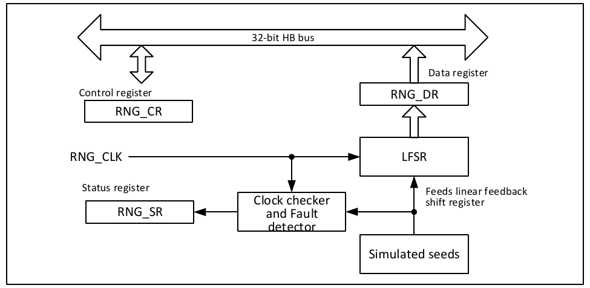

The Random Number Generator (RNG) is based on continuous analog noise and provides a 32-bit random number when the host reads data.

The random number generator is implemented using an analog circuit that generates seeds for the linear feedback shift register (RNG_LFSR) to produce 32-bit random numbers. The RNG_LFSR is clocked by a dedicated clock (PLL48CLK) at a constant frequency, so the quality of the random number is related to the HCLK clock. When a large number of seeds are introduced into the RNG_LFSR, the content of the RNG_LFSR is transferred to the data register (RNG_DR).
The specific operation steps of the RNG are as follows:
RNG errors include clock errors and seed errors. When a clock error occurs, the RNG can no longer generate random numbers. In this case, check whether the clock controller is correctly configured and can provide the RNG clock, then clear the CEIS bit. When the CECS bit is 0, the RNG can operate normally. When a clock error occurs, it does not affect the previous random number, which can still be used normally. When a seed error occurs, the value in the RNG_DR register cannot be used as a random number. To reuse the RNG, first clear the SEIS bit, then clear the RNGEN bit and set it to 1 again to re-initialize and restart the RNG.
| Name | Address | Description | Reset Value |
|---|---|---|---|
| R32_RNG_CR | 0x40023C00 | RNG control register | 0x00000000 |
| R32_RNG_SR | 0x40023C04 | RNG status register | 0x00000000 |
| R32_RNG_DR | 0x40023C08 | RNG data register | 0x00000000 |
Offset address: 0x00
| 31 | 30 | 29 | 28 | 27 | 26 | 25 | 24 | 23 | 22 | 21 | 20 | 19 | 18 | 17 | 16 |
|---|---|---|---|---|---|---|---|---|---|---|---|---|---|---|---|
| Reserved | |||||||||||||||
| 15 | 14 | 13 | 12 | 11 | 10 | 9 | 8 | 7 | 6 | 5 | 4 | 3 | 2 | 1 | 0 |
|---|---|---|---|---|---|---|---|---|---|---|---|---|---|---|---|
| Reserved | IE | RNGEN | Reserved | ||||||||||||
| Bits | Name | Access | Description | Reset |
|---|---|---|---|---|
| [31:4] | Reserved | RO | Reserved. | 0 |
| 3 | IE | RW | Interrupt enable control: 1: Enable RNG interrupt; 0: Disable RNG interrupt. |
0 |
| 2 | RNGEN | RW | Random number generator enable: 1: Enable random number generator; 0: Disable random number generator. |
0 |
| [1:0] | Reserved | RW | Reserved. | 0 |
Offset address: 0x04
| 31 | 30 | 29 | 28 | 27 | 26 | 25 | 24 | 23 | 22 | 21 | 20 | 19 | 18 | 17 | 16 |
|---|---|---|---|---|---|---|---|---|---|---|---|---|---|---|---|
| Reserved | |||||||||||||||
| 15 | 14 | 13 | 12 | 11 | 10 | 9 | 8 | 7 | 6 | 5 | 4 | 3 | 2 | 1 | 0 | |
|---|---|---|---|---|---|---|---|---|---|---|---|---|---|---|---|---|
| Reserved | SEIS | CEIS | Reserved | SECS | CECS | DRDY | ||||||||||
| Bits | Name | Access | Description | Reset |
|---|---|---|---|---|
| [31:7] | Reserved | RO | Reserved. | 0 |
| 6 | SEIS | RW | Seed error interrupt status (this bit is set simultaneously with SECS): 1: One of the following error sequences detected: - More than 64 consecutive identical bits; - More than 32 consecutive alternating 0s and 1s. 0: No error sequence detected. |
0 |
| 5 | CEIS | RW | Clock error interrupt status (this bit is set simultaneously with CECS): 1: PLL48CLK clock not correctly detected; 0: PLL48CLK clock correctly detected. |
0 |
| [4:3] | Reserved | RO | Reserved. | 0 |
| 2 | SECS | RO | Seed error current status: 1: One of the following error sequences detected: - More than 64 consecutive identical bits; - More than 32 consecutive alternating 0s and 1s. 0: No error sequence detected. |
0 |
| 1 | CECS | RO | Clock error current status: 1: PLL48CLK clock not correctly detected; 0: PLL48CLK clock correctly detected. |
0 |
| 0 | DRDY | RO | Data ready (this bit is cleared to 0 after reading the R32_RNG_DR register): 1: R32_RNG_DR register is valid, this random number is available; 0: R32_RNG_DR register is invalid, this random number is not available. |
0 |
Offset address: 0x08
| 31 | 30 | 29 | 28 | 27 | 26 | 25 | 24 | 23 | 22 | 21 | 20 | 19 | 18 | 17 | 16 |
|---|---|---|---|---|---|---|---|---|---|---|---|---|---|---|---|
| RNDATA[31:16] | |||||||||||||||
| 15 | 14 | 13 | 12 | 11 | 10 | 9 | 8 | 7 | 6 | 5 | 4 | 3 | 2 | 1 | 0 |
|---|---|---|---|---|---|---|---|---|---|---|---|---|---|---|---|
| RNDATA[15:0] | |||||||||||||||
| Bits | Name | Access | Description | Reset |
|---|---|---|---|---|
| [31:0] | RNDATA | RO | 32-bit random number. | 0 |